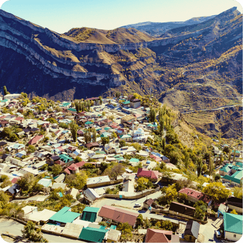
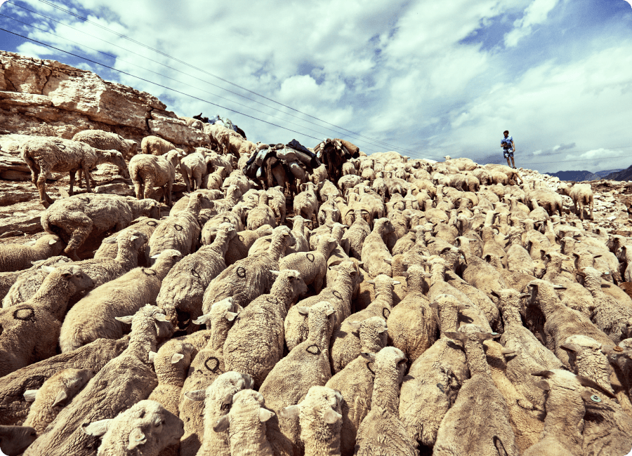
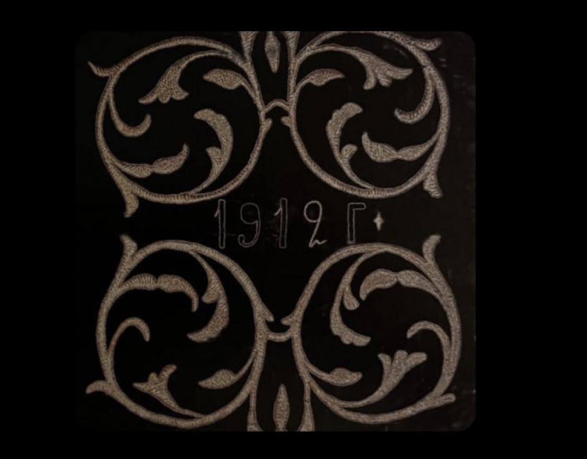

Почему гостить в горах можно только три дня и что происходит после. Где тренировался Хабиб Нурмагомедов и какова на вкус абрикосовая каша. Краткий ликбез по счастливой жизни аварцев — самого многочисленного народа Дагестана.
ОБ АВАРЦАХ
В Дагестане живут десятки народов, и аварцы из них — самый многочисленный. По данным 2010 года их было около 900 тысяч — примерно треть населения республики. Большие аварские диаспоры есть и в Азербайджане, Грузии, Турции.

Аварцы уже много столетий занимают значительную территорию западной нагорной части Дагестана — их сёла разбросаны по долинам вдоль быстрых рек.
Нигде в России люди не селятся так высоко в горах, как в Дагестане. Дома здесь нередко ставят на самых кручах, буквально в облаках. Их жителям приходится каждый день проделывать путь вверх-вниз, будто не замечая рельефа
Традиции и кухня
Аварцы живут довольно обособленно и семьи, как правило, создают внутри одного аула. Когда-то самым крепким считался брак, заключённый между близкими родственниками и однофамильцами.
Тем удивительней то, как горцы научились с пользой для себя взаимодействовать с другими народами. Каждая уважаемая аварская семья стремилась иметь кунаков в разных уголках страны. Кунак — не просто гость или радушный хозяин, а добрый друг, почти родственник.
Кунак всегда приютит, накормит и, если потребуется, обеспечит безопасность в чужой земле. Визит кунака — дар небес, и относиться к гостю нужно соответственно.
tanci-kavkaza.ru
По горским обычаям, у кунака можно гостить три дня без объяснения причин. Можно задержаться и подольше, но тогда придётся работать по хозяйству наравне со всеми. Дружеские отношения между кунаками из разных сёл, народов и даже разных вероисповеданий поддерживаются и передаются по наследству. Благодаря им кавказское гостеприимство вошло в поговорку.
Далеко не в каждом ауле есть магазин. Держать домашний скот здесь — вопрос выживания.

У каждого аварца хотя бы раз в жизни случался момент, когда он чабановал — пас коров, бычков, овец. Утром выгнать скот на горные пастбища, вечером пригнать домой на дойку — другие дела, как в тетрисе, встраиваются в эти рамки. Мясо, творог, сыр и масло — вот главные ингредиенты аварской кухни.
Аварцы не только чабаны, но и терпеливые, искусные земледельцы. С киркой и лопатой они изрезали склоны террасами, укрепили стенки камнями, подняли на ослах или собственных спинах плодородную землю из долины и всё это — чтобы выращивать на огородах пшеницу, кукурузу, фруктовые деревья
Аварская кухня одновременно простая — сушеную говядину к приезду гостя достают из погреба и неспешно варят часами — и очень изысканная: сыр тут подают с зеленью и чесноком, пельмени защипывают «косичкой», в кашу кладут пасту из семечек, перемолотых с мёдом. Вот несколько рецептов — для аппетита.
Народное творчество
Представляясь, аварец обязательно скажет, откуда он родом. Название аула многое говорит о человеке — из какого он тухума (рода), как живёт, чем занимается.
Если сегодня многое покупают готовым, то в былые времена у каждого селения была своя специализация: одни выделывали шкуры, другие пряли шерсть и валяли из войлока одежду. А тонкая работа здешних серебряных дел мастеров знаменита далеко за пределами Дагестана.
Для аварцев существует прямая связь между личными достоинствами человека и тем, насколько хорошо он одет и какие украшения выбрал. Даже в наши дни после сватовства всё село обсуждает, сколько каких украшений преподнёс жених невесте.

Чехол на подушку. Аул Чох, Гунибский район. 1912 год. Бархат, золотые нити.
Кавказский словарь: земля и люди. Составитель: Сосина О. А.. Издательство: МГОМЗ, 2012 год
Поднос для теста. Дагестан. Начало XX века. Художественная резьба и роспись по дереву. Дагестанский музей изобразительных искусств им. П. С. Гамзатовой.
Без такого предмета нельзя представить аварское застолье, особенно по праздникам. Это при том, что деревьев в дагестанских горах совсем немного, а и изделия из них имеют особую ценность.
Без такого предмета нельзя представить аварское застолье, особенно по праздникам. Это при том, что деревьев в дагестанских горах совсем немного, а и изделия из них имеют особую ценность.
Кавказский словарь: земля и люди. Составитель: Сосина О. А. Издательство: МГОМЗ, 2012 год
Серьги-лунницы. Дагестан. Начало XX века. Серебро. Дагестанский музей изобразительных искусств им. П. С. Гамзатовой.
В отличие от даргинских или лакских, аварские ювелирные изделия — сдержанные. Мастер украсил серьги лунной формы простым геометрическим орнаментом — чтобы связать небесный и земной миры.
В отличие от даргинских или лакских, аварские ювелирные изделия — сдержанные. Мастер украсил серьги лунной формы простым геометрическим орнаментом — чтобы связать небесный и земной миры.
Кавказский словарь: земля и люди. Составитель: Сосина О. А. Издательство: МГОМЗ, 2012 год

СТИЛЬ И СПОКОЙСТВИЕ
Аварская пижама
Взрослая пижама
с калмыкскими узорами
с калмыкскими узорами
ООО «ЯНДЕКС» (ОГРН 1027700229193, 119021, Москва, ул. Льва Толстого, д.16)


Орнаменты складываются в своего рода комиксы: вот чабан пасёт белых барашков на склонах гор, вот дерево, а вот козёл. Геометрические и растительные узоры, изображения птиц и зверей «отвечают» за разные аспекты жизни горцев: птица помогает вымолить дождь, козёл символизирует плодородие, дерево — древо жизни.
Чтобы погружение в культуру стало полнее, а путешествие не ограничилось одной лишь поездкой, мы попросили петербургского дизайнера Ольгу Гинзбург из студии Ola Ola создать авторский орнамент для пижамы. Сдержанный растительный орнамент совсем небольшую часть пижамы и не бросается в глаза — такая скромная манера очень характерна для аварских мастеров.
Колыбельная
Нежные слова колыбельной тоже сплетаются в узоры, утешают, вдохновляют и приносят спокойствие. Послушайте, как всё это звучит на аварском, в колыбельной XIX века, записанной в Гумбетовском районе Дагестана
аварская колыбельная

Словно дождь, который выпросили [у Всевышнего], — мамин-мой.
Словно солнце, которое появилось после чтения молитвы, —
мамин-мой.
Словно свет солнца и луны — это ты.
Словно сердце в груди моей — это ты.
Словно ключик к сердцу — это ты.
Или шкатулка к этому ключику — это ты.
Или золотое изделие в этой шкатулке — это ты.
Словно солнце, которое появилось после чтения молитвы, —
мамин-мой.
Словно свет солнца и луны — это ты.
Словно сердце в груди моей — это ты.
Словно ключик к сердцу — это ты.
Или шкатулка к этому ключику — это ты.
Или золотое изделие в этой шкатулке — это ты.
Гьарун кьураб цӀад гӀадинав, эбел ав,
ЦӀалун кьураб бакъ гӀадинав, эбел ав,
Бакъ-моцӀалъул канлъи гӀадав авлъидал,
Кереналъул ракӀ гӀадинав авлъидал,
РакӀалъулги кӀулал гӀадав авлъидал,
КӀулазулги гъамас гӀадав авлъидал,
Гъансинибги месед гӀадав, бабал ав.
ЦӀалун кьураб бакъ гӀадинав, эбел ав,
Бакъ-моцӀалъул канлъи гӀадав авлъидал,
Кереналъул ракӀ гӀадинав авлъидал,
РакӀалъулги кӀулал гӀадав авлъидал,
КӀулазулги гъамас гӀадав авлъидал,
Гъансинибги месед гӀадав, бабал ав.
Исполняет колыбельную Хиринду Султанова, солистка Дагестанской государственной филармонии и ансамбля «Дагестан».
На фоне звучит пандур — дагестанский двухструнный музыкальный инструмент, дальний родственник балалайки и домры

Алиса, включи
аварскую колыбельную*
аварскую колыбельную*

Певица Хиринду Султанова: «Аварская мать поёт для ребёнка в присутствии его бабушки. Выходит, молодая мать рассказывает собственной матери, с чем ассоциируется её малыш».
Познакомьтесь поближе

Махачкала
Город-парадокс, будто подросток — вырос, но не успел повзрослеть. За постсоветские годы столица Дагестана увеличилась почти вдвое и стала крупнейшим городом Северного Кавказа.
Сегодня здесь живёт более 600 тысяч человек. В Махачкале бок о бок существуют разные эпохи и миры: городской и сельский, постмодернистский и средневековый. Никогда не угадаешь, что ждёт за поворотом.
Махачкалинцы очень радушные люди, только попросите показать город — получите лучшего гида и доброго друга на долгие годы. Вот несколько идей, где можно отвлечься от суеты и окунуться в атмосферу приморского города со сдержанным горским характером.
Отели в Махачкале
Аварский театр
Удивительное дело — смотреть пьесу на совершенно ни на что не похожем языке.
В Аварском музыкально-драматическом театре имени Гамзата Цадасы постановки идут на аварском. Вдобавок, театр разместился в примечательном здании.
Архитектор Геннадий Мовчан — специалист по аварской архитектуре — создал свой модернистский шедевр, вдохновившись устройством традиционного дома — сакли. На открытой террасе театра расположился кафетерий, где можно устроиться в кресле и часами наблюдать за жизнью махачкалинцев.

улица Пушкина, 1
Петровский маяк
Одно из старейших зданий города высится в сердце старого порта Петровска (так называлась Махачкала до 1921 года). Отсюда хорошо видны и город, и Каспий с мерно скользящими кораблями.
ул. Амирханова, 20
Гора Тарки-Тау
По легенде именно у горы Тарки стоял лагерем Петр I по пути в Дербент. Здесь же, три века спустя, тренировался самый известный в мире аварец Хабиб Нурмагомедов.
Подъём на гору Тарки — классика подготовки махачкалинских борцов. Этот извилистый серпантин пешком преодолеет только опытный спортсмен, так что берите такси. Сверху город, раскинувшийся на 100 километров вдоль моря, уместится в один кадр.

Махачкалинцы любят приезжать сюда на закате — заземлиться и походить босиком по траве, выпить травяной чай и полюбоваться Каспийским простором из панорамного кафе «Тарковский».
Смотровая площадка,
Советский район
Махачкалы
Советский район
Махачкалы
А где поесть
В Махачкале всегда выйдет вкусно поесть, а вот выпитьгораздо сложнее. Аварцы и другие жители города религиозны и не употребляют алкоголь, поэтому в ресторанах редко бывает шумно.
tourister.ru
Ресторан «Папаха»
Ковры и кувшины, бурки и сабли, огромные окна, удобные дизайнерские кресла и традиционная аварская кухня. Спортсмен Хабиб Нурмагомедов открыл ресторан для того, чтобы показать «высокую кухню гор». И оказалось, что старинные рецепты весьма современны — здоровая, натуральная, сбалансированная еда очень подходит духу времени. Попробуйте аварский весенний суп мугь из пяти видов злаков. Это кашеобразная похлёбка из нескольких видов бобовых, пшеницы и кукурузы. Бульон к нему традиционно варят на сушеном мясе, пережившем зиму в погребе. А к супу возьмите классический ботишал — аварский вариант тонкой лепёшки чуду, начинённой толокном и сыром.
Ковры и кувшины, бурки и сабли, огромные окна, удобные дизайнерские кресла и традиционная аварская кухня. Спортсмен Хабиб Нурмагомедов открыл ресторан для того, чтобы показать «высокую кухню гор». И оказалось, что старинные рецепты весьма современны — здоровая, натуральная, сбалансированная еда очень подходит духу времени. Попробуйте аварский весенний суп мугь из пяти видов злаков. Это кашеобразная похлёбка из нескольких видов бобовых, пшеницы и кукурузы. Бульон к нему традиционно варят на сушеном мясе, пережившем зиму в погребе. А к супу возьмите классический ботишал — аварский вариант тонкой лепёшки чуду, начинённой толокном и сыром.
улица Расула Гамзатова, 64
Яндекс Карты
«Чарах»
Здесь готовят единственное блюдо — закрытый пирог къячи. Мясо с нежным горным тмином укладывают в тесто и запекают в печи. Подают с молочной сывороткой и ножницами — так и в самом деле гораздо удобнее. И пусть къячи не аварское блюдо, а лакское, за одним столом в кафе «Чарах» собираются представители всех национальностей Дагестана.
Здесь готовят единственное блюдо — закрытый пирог къячи. Мясо с нежным горным тмином укладывают в тесто и запекают в печи. Подают с молочной сывороткой и ножницами — так и в самом деле гораздо удобнее. И пусть къячи не аварское блюдо, а лакское, за одним столом в кафе «Чарах» собираются представители всех национальностей Дагестана.

улица Мирзабекова, 141/1

Яндекс Карты
Hinkal Brothers
Меню этого бистро, расписного кубика с большими окнами в самом центре Махачкалы — энциклопедия кухонь народов Дагестана — кумыкской, лакской, лезгинской. Именно здесь лучше всего пробовать пышный аварский хинкал. Классика не приедается.
Меню этого бистро, расписного кубика с большими окнами в самом центре Махачкалы — энциклопедия кухонь народов Дагестана — кумыкской, лакской, лезгинской. Именно здесь лучше всего пробовать пышный аварский хинкал. Классика не приедается.
улица Дзержинского, 8

Яндекс Карты
«MURRAD — Шашлычная №1»
Мало кто знает, что в Дагестане редко жарят мясо. Традиционный способ его приготовить — сварить. Поэтому ресторанов, где мясо умеют жарить — наперечёт. Этот как раз такой! Берите бараньи рёбрышки «пистолеты» и слоёный азербайджанский хлеб фесели с курдючным салом и чабрецом. Это не вполне про традиционную аварскую кухню, скорее про то, что на Кавказе всё смешано и всё вкусно.
Мало кто знает, что в Дагестане редко жарят мясо. Традиционный способ его приготовить — сварить. Поэтому ресторанов, где мясо умеют жарить — наперечёт. Этот как раз такой! Берите бараньи рёбрышки «пистолеты» и слоёный азербайджанский хлеб фесели с курдючным салом и чабрецом. Это не вполне про традиционную аварскую кухню, скорее про то, что на Кавказе всё смешано и всё вкусно.
улица Мухтара Азизова, 59А/1
НЕ ТОЛЬКО МАХАЧКАЛА
Чтобы понять аварцев, поезжайте в горы. В тёплую южную долину с абрикосовыми садами и целебным горным воздухом или в прохладную северную.
Горы захватывают дух, солнце светит ярче, а на серпантинах закладывает уши.
Хунзах — столица древней Аварии, средневекового аварского государства, а ныне — современный райцентр — расположился на краю высокогорного плато.

Здесь часто дует ветер и температура градусов на 5-10 ниже, чем в Махачкале. Это немудрено — горное плато раскинулось на высоте 2000 метров над уровнем моря и со всех сторон раскалывается живописными каньонами и освежающими водопадами. Например, Ханский водопад у противоположного края плато будто нарочно создан для неспешных проводов заката
Прекрасные виды открываются и от подножия Хунзахской крепости — здесь можно часами наблюдать за полётом орлов под шум ветра, которые изредка прерывает пение муэдзина.
Хунзахский историко-краеведческий музей расскажет про дагестанскую IKEA — простую многофункциональную мебель, придуманную аварцами задолго до шведов. А в четырёх километрах к северу от Хунзаха, в селе Цада, родился дагестанский Пушкин — аварский поэт Расул Гамзатов.
село Хунзах
На карте
Хунзахский историко-краеведческий музей — село Хунзах
улица Хунзахская, 22
село Цада Хунзахский район
село Цада Хунзахский район
Село Гуниб будто вмонтировано прямо в скалу, а его название переводится с аварского как «куча камней».
На вершине расположилась Гунибская крепость, а под ней — дома жителей среднего и нижнего сёл. В седловине перевала находится Верхний Гуниб.
Прогуляйтесь по сосновому лесу, загляните в горный Ботанический сад и насладитесь видами на платообразный Кегерский хребет из панорамного кафе «Адат».
Чох. Расположенное на одном из ответвлений Великого шёлкового пути, некогда богатое поселение аварской знати называют музеем под открытым небом.
Каменные дома с арочными окнами и террасами амфитеатром выстроились на солнечном склоне.
Для автомобильного движения Чох не приспособлен, поэтому смело оставляйте машину на главной площади и идите исследовать мощеные улочки пешком.
Здесь несложно заплутать, но тем интересней — каждому гостю Чох открывается с новой стороны. А местные жители приветливы и всегда рады пригласить к себе на чашечку чая.
Село Чох
Аварский сувенир
Вязаные из плотной цветной шерсти носки — джурабы — согревают и создают уют, где бы вы ни оказались.
Горянки считают, что их рукоделие ещё и оберегает, защищает своего хозяина. В пёстрых узорах можно разглядеть горный пейзаж и вспомнить о неспешных беседах, широких просторах, парящих орлах.
Забронировать отель с кешбэком до 30% и отправиться на поиски спокойствия в культуру аварцев
можно на сервисе**
можно на сервисе**

*Доступно при наличии подписки Яндекс Плюс. Условия: https://clck.ru/S2yGv
**Акция с 25.06.2022 г. по 31.07.2022 г. Условия акции: https://clck.ru/rf2US. Только для пользователей с подпиской Яндекс Плюс.
**Акция с 25.06.2022 г. по 31.07.2022 г. Условия акции: https://clck.ru/rf2US. Только для пользователей с подпиской Яндекс Плюс.
0+